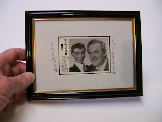

#40 Ventrilo-Card
3/18/2010
{kind=link}

Bob Isaacson
Set #4, Card #4
Bob Isaacson taught himself Ventriloquism from library books at the age of fourteen, after he saw Paul Winchell and other ventriloquists on television, and met Chicago vent Paul Stadelman in person. Bob's first dummy was a Turner figure from Abbott's Magic Co., and later he bought a Marshall figure from Frank Marshall.
In the early '60s, Bob appeared at corporate functions, banquets and shows using the name Robert Royal. He also made some educational films, using his figure as a student. In the '70s, Bob toured with a large magical illusion show "International Startime."
In recent years, Bob has been performing in old-time radio show recreations playing Bergen and McCarthy. He keeps a busy schedule performing and lecturing on ventriloquism. In 1994, Bob was voted Ventriloquist of the Year.
Copyright 1995 OO-LA-LA, INK.
* * * * *
The signed and framed Bob Isaacson Great Ventriloquist card shown here will be awarded tomorrow.